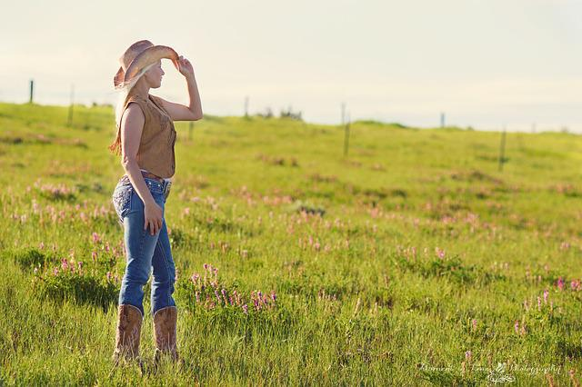
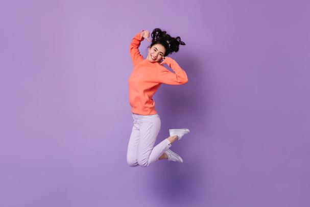

컨테이너 안에 맞게
크기 조정: object-fit

클리핑마스크 :mask-image

요소의 비율을 설정 : aspect-ratio
aspect-ratio: 16 / 9
aspect-ratio: 21 / 9
aspect-ratio: 4 / 3
aspect-ratio: 1 / 1
aspect-ratio: 2 / 1
aspect-ratio: 3 / 1
aspect-ratio: 2.35 / 1
9/16